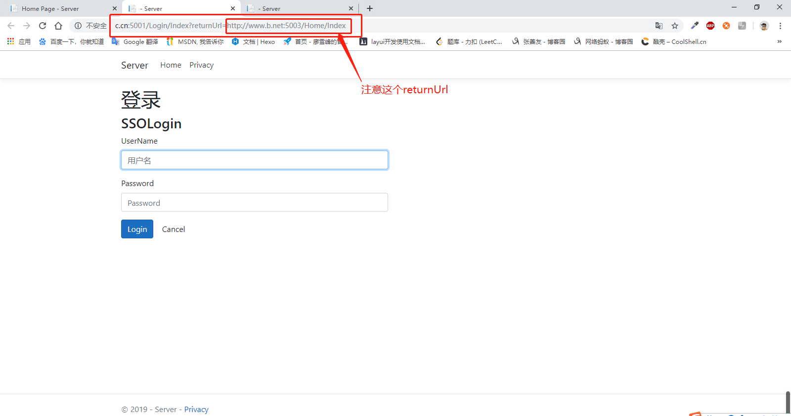

按照之前说的，今天来分享一个简单的单点登录的实现方案，想做这个分享，是因为之前接的一个个人的项目里，有涉及相关的内容，对这块的知识点其实也很模糊，但是要做的话也能做出来，就是对原理性的东西理解的不透彻。
这次借着这个机会，我也学习了一下相关的知识，在这里简单的介绍下。
还是老规矩，原理性的内容，我穿插的说，不从头到尾说了，而且我也不一定说的明白，网上关于单点登录的知识点挺多的，推荐一篇https://yq.aliyun.com/articles/636281，好了，开始吧。
单点登录（SSO），虽然这个叫法里有个“单”字，但我认为，要实现它方法并不“单”，这个单不只是一种方法，也指的是一个步骤，我今天介绍的只是一种方法里的一个步骤。
了解过SSO相关知识的小伙伴肯定知道，单点登录实现的最终目标是，多个系统，在一处进行一次登录，在一处进行一次退出。今天我的分享其实只实现了第一步，也就是多个系统，一处登录，至于后边的内容，后边有机会再继续聊。
好了，看下系统结构
Server是用来做登录验证的地方，另外两个是子系统，这两个子系统是没有登陆模块的，进入子系统后会自动跳转到SSO，这里我们在涉及SSO架构的时候，Server的部分最好是业务分明一点，也就是在SSO里只有登录模块，不做别的，理想的状态是，当我们登录了整个系统中的某一个子系统，其他子系统在访问的时候也就随之登录。（这一步，我会在后边的博客里分享，这一篇只到跳转到SSO）。
Server里需要完成的逻辑有，验证登录用户有效性，生成令牌（token），验证令牌，看下代码
1 | [] |
以上两个控制器是完成用户信息有效性的验证，注意在验证完成后，我们将访问系统的令牌返回给了子系统。子系统的每次访问，都会去验证这个令牌，如果令牌过期或者错误，则子系统将无法访问。
再来看下Server端验证token的过程（另附上Lib里的签名，验证方法，比较简单，其实我不太喜欢往博客里灌太多代码，读内容的时候会影响思路）
1 | /// <summary> |
1 | public class TokenLib |
至此，SSO的简单的登录验证工作告一段落，当然，如果要做一次登录的话，需要在此基础上改造升级一下，这里就不多说了，后边有机会再聊。
来看客户端逻辑
首先我们进到客户端子系统的时候，要先验证令牌的有效性，也就是cookie里的token，在服务端的session里是否存在且有效，看下代码(注意，代码里的域名地址，是我提前在host里做好了设置，不做设置的话，可以以localhost来代替，但要注意端口号做好区分)
1 | public async Task<IActionResult> Index(string Token) |

注意代码里涉及到了一些url参数，更严谨的方式是，把returnUrl的值做一下转码。
客户端的逻辑比较简单，就是在进入子系统时，要去验证令牌的有效性，不多说，至此，大的流程上，我们便完成了多个系统，一处登录的效果，看下效果图吧
我们把系统的启动服务器改为Kestrel（稍后我在简单提一下.net core mvc的配置），配置好我们做好的host域名和端口，然后依次启动

我们看到两个子系统都跳转到了sso的登录界面
再看下登陆后的效果
至此，我们就完成了简单的sso实现方案，多个系统，一处登录。（篇幅关系后边再说一次登录）
在额外说点关于.net core的东西，这篇博客之所以会晚了几天，还有一个原因就是最近在转向.net core，在.net core 2.0以后，越来越多的c#开发者，甚至其他语言的开发者大规模转向.net core，各种云服务也都积极开发对.net core的接口开放能力，具体内容可参见infoq和张善友队长的相关文章，尤其是在前些天.net core 3.0的正式版本放出后，其生态圈也是更加完善，跨平台也只是.net core的一小部分优点。因此，我也是接着这个机会，决定把sso的这篇博客用最新的.net core 3.0的方式来实现，从图一的框架结构看，.net core mvc的框架结构已经和.net mvc不太一样了，依赖注入的设计思想贯穿整个.net core的框架结构（这个我也不太懂，就不多说了），以这个系统为例，我们要在startup.cs文件里注册我们需要的诸如session，cookie等相关服务
好了，关于.net core的内容，这篇也不多说了，微软官方给出的教程还是挺全的(传送门:https://docs.microsoft.com/zh-cn/aspnet/core/tutorials/razor-pages/?view=aspnetcore-3.0)，而且.net core除了性能上的优势（实测用.net core生成的mvc脚手架和.net framework生成的对比，页面渲染速度为40ms左右对比1200ms左右，近30倍的提升，ef core 和ef对比，迁移速度，查询速度等也有很大的提升，且多种方法增加了异步操作，性能飞跃），也增加了许多新特性，从nuget上搜索相关的开发包，常用的包（如stackredis,elasticsearch.net,jwt等）已经基本全部支持.net core，总而言之吧，.net core刚出来的时候，是听别人说它有多好，这次自己亲自体会了一下，真的是看得见的惊喜，虽然还有很多需要学习和了解的地方，但后边的项目，会积极转向.net core。
好了这篇就到这吧，下篇可能会聊聊SignalR，单点登录没说完的，后边有机会在继续说吧。